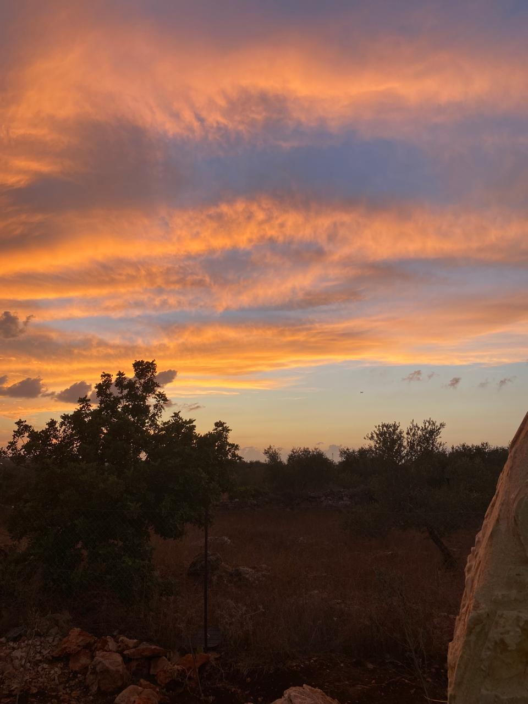

im 21 years old ,im study nis
قلقيلية مدينة فلسطينية تقع على مقربة من الخط الأخضر في فلسطين وهي مركز محافظة قلقيلية، تبلغ مساحة أراضي المدينة حسب المخطط الهيكلي لعام 2019 حوالي 4250 دونم[3]، وتقع أراضيها عند التقاء الساحل مع الجبل وتعتبر خط الدفاع الأول نظرًا لقربها من الخط الأخضر. وتعتبر سلة غذاء فلسطين